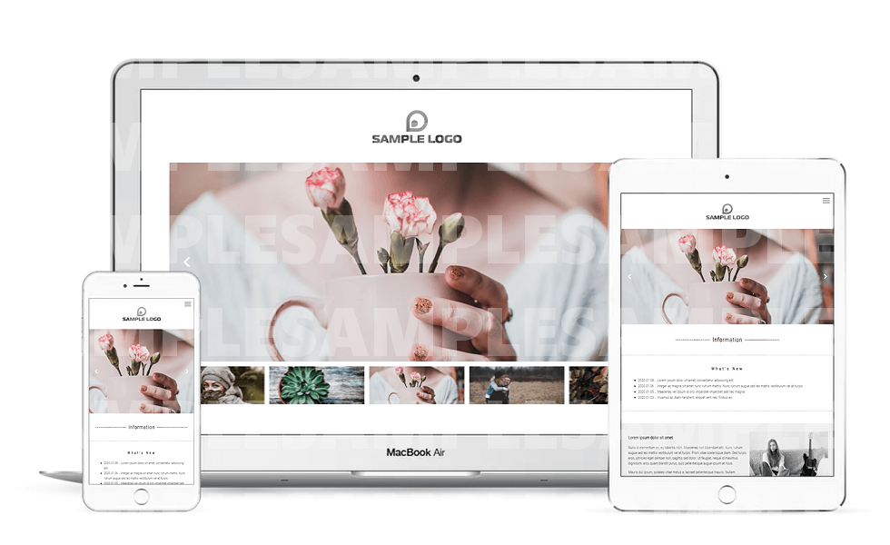

2020
01
28

プログラミングが苦手な人のためのスライダー講座【Swiper編】で使用されるサンプルWEBデザインを担当しました。サンプルではあるものの、レスポンシブWEBデザインでコーディングし、ハンバーガーメニューはDrawerを使用しました。
Swiperは非常にカスタマイズ性に優れているので、様々なスライダーをデザインできます。また、JavaScriptなどのプログラミングが苦手な方でも、比較的簡単に実装できるのもおすすめのポイントだといえます。カスタマイズの際には、SwiperのオプションをいじるだけなのでJavaScriptの知識はほぼ必要なく、実際のところCSSの知識の方が重要でした！